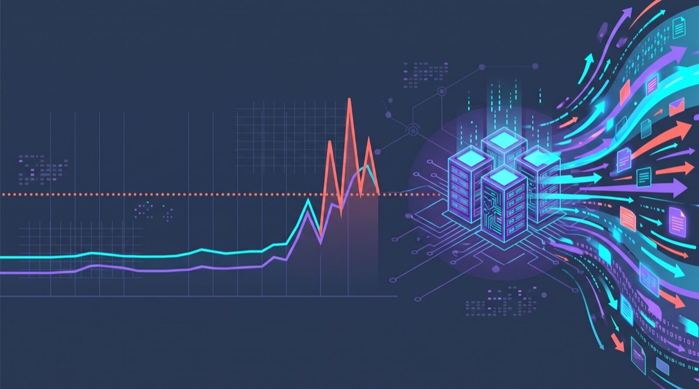

Load testiranje za QA timove: šta k6 hvata, a šta prolazni prag i dalje može da sakrije
Praktičan k6 vodič za QA timove: pisanje load testa, postavljanje pragova i zamke zbog kojih zelen dashboard može da zavara.
Funkcionalni testovi su zeleni, izdanje ide u produkciju, a prvi pravi skok saobraćaja svejedno obori checkout endpoint. Ništa u skupu testova nije bilo pogrešno — samo nijedan test nikad nije pitao šta se dešava kada petsto ljudi pogodi taj endpoint u istom trenutku umjesto jednog. To je rupa koju load testiranje popunjava, i većina QA skupova testova je i dalje ostavlja nepokrivenom, često zato što su alati nekada zahtijevali strmu krivu učenja prije nego što bi vam rekli bilo šta korisno. Grafanin k6 je postao podrazumijevana ulazna tačka za zatvaranje te rupe bez režijskog troška koji su nekada tražili JMeter ili Gatling.

Zašto ovo zaslužuje sopstveni skup testova
Funkcionalni testovi provjeravaju ispravnost jedan po jedan zahtjev: za ovaj ulaz, da li je izlaz tačan. Load testiranje provjerava šta se dešava kada mnogo zahtjeva stiže istovremeno i nastavlja da stiže, i otkriva načine otkazivanja koje test sa jednim zahtjevom strukturno ne može da vidi — connection pool koji je u redu na jednom zahtjevu u sekundi, a iscrpljen na pedeset, N+1 upit koji postaje vidljiv tek pod istovremenim opterećenjem, keš koji ostaje "topao" u izolaciji, ali doživi stampedo kada ga mnogo klijenata promaši odjednom, rate limiter koji zapravo nikad nije podešen. Ništa od toga se ne pojavljuje u skupu testova koji šalje zahtjeve jedan za drugim.
Prva k6 skripta
k6 skripte su obični JavaScript, što je velikim dijelom razlog zašto je k6 postao uobičajen izbor za timove koji već pišu funkcionalne testove u JS-u ili TS-u — nema posebnog GUI alata, nema XML test planova za održavanje. Minimalan test protiv checkout endpointa izgleda ovako:
import http from 'k6/http';
import { check, sleep } from 'k6';
export const options = {
stages: [
{ duration: '1m', target: 20 }, // postepeno do 20 virtuelnih korisnika
{ duration: '3m', target: 20 }, // zadrži stabilno
{ duration: '1m', target: 0 }, // postepeno spuštanje
],
thresholds: {
http_req_duration: ['p(95)<400'], // 95% zahtjeva ispod 400ms
http_req_failed: ['rate<0.01'], // stopa grešaka ispod 1%
},
};
export default function () {
const res = http.post(
'https://staging.example.com/api/checkout',
JSON.stringify({ cartId: 'cart_123', paymentToken: 'tok_test' }),
{ headers: { 'Content-Type': 'application/json' } }
);
check(res, {
'status is 200': (r) => r.status === 200,
'order id returned': (r) => r.json('orderId') !== undefined,
});
sleep(1); // vrijeme razmišljanja između zahtjeva, ne petlja bez pauze
}Blok thresholds je dio koji ovo pretvara u nešto na čemu CI može da blokira build: ako p95 latencija ili stopa grešaka pređe granicu koju ste postavili, pokretanje pada, isto kao što neuspješna asercija obori funkcionalni test. Za pravi checkout tok obično biste modelovali više od jednog endpointa — dodavanje u korpu, primjena kupona, slanje plaćanja — svaki sa sopstvenim udjelom u saobraćaju, a tome služi k6 funkcionalnost scenarija: omogućava da kombinujete više obrazaca zahtjeva u jednom pokretanju umjesto da pišete posebne skripte za svaki endpoint. Sam k6 održava Grafana Labs, a novija izdanja su dodala browser modul koji može da pokreće pravu Chromium instancu pod opterećenjem, što je korisno kada treba da vidite kako se UI ponaša dok je backend pod stresom, a ne samo sirovu propusnost API-ja.
Čitajte rezultate, ne samo dashboard
Zeleno pokretanje nije isto što i zdrav sistem. Broj koji vrijedi pratiti je p95 ili p99 latencija, a ne prosjek — prosječno vrijeme odgovora od 150ms lako sakrije "rep" korisnika koji čekaju četiri sekunde, a dashboard koji prikazuje samo srednju vrijednost reći će vam da je sve u redu dok značajan dio stvarnih korisnika ima loše iskustvo. Druga stvar koju vrijedi provjeriti prije nego što povjerujete brojevima je način na koji se opterećenje generiše: fiksni broj virtuelnih korisnika koji se vrte u petlji bez pauze modeluje zatvoren sistem, u kom se opterećenje automatski povlači čim server uspori, što može umanjiti probleme u poređenju sa stvarnim saobraćajem, gdje novi zahtjevi nastavljaju da stižu sopstvenim tempom bez obzira na to kako je serveru.
Zamke i ograničenja
Load testiranje zaslužuje svoje mjesto u QA skupu testova, ali ima i sopstvene stvarne načine otkazivanja:
- Staging rijetko dovoljno liči na produkciju. Manje instance, djelić produkcionog obima podataka i niži limiti konekcija su uobičajeni, a posljedica seče u oba smjera: testovi mogu da potcijene probleme jer produkcija ima više rezerve, ili da ih precijene jer se staging guši pod opterećenjem koje produkcioni obim podataka nikad ne bi proizveo. Tretirajte rezultate sa staginga kao smjernicu, ne kao garanciju, i to eksplicitno navedite kada ih izvještavate.
- Test usmjeren na pogrešno okruženje. Pogrešno podešen base URL ili promjenljiva okruženja može poslati pravo opterećenje na produkciju bez ikakvog rate limita. Neka ciljni URL bude eksplicitan, zaštićen i pregledan, isto kao što biste pregledali skriptu za migraciju.
- Bez vremena razmišljanja. Ispaljivanje zahtjeva jedan za drugim bez pauze ne liči na način na koji stvaran korisnik klikće kroz tok, i daće brojeve propusnosti koje nijedan stvaran obrazac saobraćaja nikad neće dostići.
- Biranje granice prolaza/pada nakon što stignu rezultati. Ako pragovi nisu postavljeni prije pokretanja, primamljivo je opravdati koji god broj se vrati. Prag prvo postavite na osnovu stvarnog SLO-a.
- AI generisanje scenarija je još novo i često iza paywall-a. Nekoliko alata za load testiranje u 2026. nudi AI pomoć pri pisanju skripti ili prijedloge scenarija, ali te funkcije su često zaključane u plaćenim paketima i i dalje traže da čovjek potvrdi da generisani scenario odgovara stvarnom saobraćaju, a ne samo da se izvršava bez grešaka.
Šta dalje
- Izaberite jedan kritičan tok — checkout, prijavu, pretragu — umjesto da u prvom pokušaju load testirate cijeli sajt.
- Prvo pokrenite skriptu sa malim brojem virtuelnih korisnika i potvrdite da provjere prolaze prije podizanja opterećenja; load test koji je pogrešan na 1 VU je samo brže pogrešan na 100.
- Pragove pišite na osnovu postojećeg SLO-a ili istorije tiketa podrške, a ne na osnovu onoga što prvo pokretanje slučajno pokaže.
- Uvežite test u CI protiv staginga, pratite p95/p99 kroz vrijeme i dokumentujte poznate razlike između tog staging okruženja i produkcije, umjesto da prolazno pokretanje tretirate kao garanciju za produkciju.
Za testiranje otpornosti sistema izvan samih load skripti pogledaj Chaos engineering Game Day za QA timove, Checkmk sintetički monitoring za QA i prikaz mog CI quality-gate pipeline-a.
Izvori
- k6 Load Testing Guide 2026: Scripts, Thresholds, and CI Setup
- k6 load testing: a practical guide for APIs — Apidog
- How to Implement API Load Testing with k6 in Node.js (2026 Guide) — DEV Community
- k6 vs JMeter vs Gatling: 2026 comparison — Tech Insider
- K6 Review 2026: AI-Driven Performance Engineering
- 7 Load Testing Mistakes That Give You False Confidence — loadtest.qa
- Load Testing Footguns
- Common Pitfalls & Best Practices — Gatling Learning
- 7 Common Performance Testing Mistakes (and How to Avoid Them) in 2026 — LoadFocus